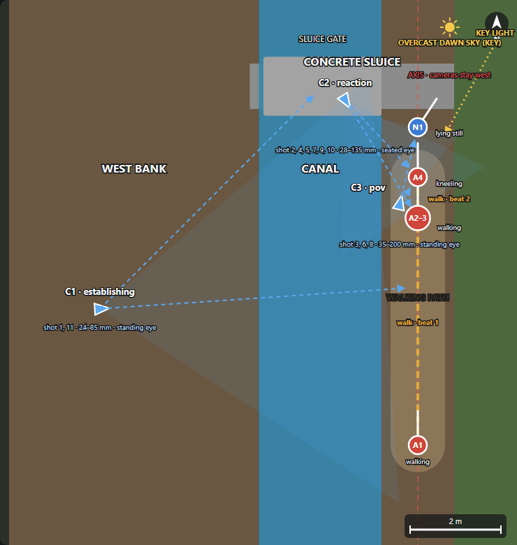

The same floor plan goes with every shot; each shot's prompt (right) names its camera on the plan and gives the framing.

One photorealistic film still for a Sri Lankan television drama, a wide 16:9 frame: one shot of a storyboard, painted as a real place with mannequins for people. A single picture, no panels. Reference images, in order: image 1 is the master floor plan of this scene seen from above; image 2 is the location sheet for the place: six views of it; take from image 2 how the place looks (its materials, the gate, the path, the water), never where the camera stands (its views are taken from other spots), and from image 1 where everything is and where this camera stands. How to read image 1, the MASTER FLOOR PLAN of this scene seen from above (north is up), the same plan for every shot of the scene: the place is drawn flat, blue for water, brown for earth and paths, green for fields, grey for concrete or stone, with their names. Each round pin is a person at one moment of the scene, in that person's mannequin colour, labelled with their initial and a number in story order (A1, A2 ...); a dashed line with an arrowhead is a walk. Each triangle is a camera position labelled C1, C2 ..., pointing the way it looks, with dashed arrows to what it films. The words below say which camera THIS shot is from and where each person is on the plan at this instant. Paint what that camera sees from where it stands: the people, things and place in front of it, on the same sides of the frame as the plan puts them, near things large and far things small. Never draw the plan, its pins, triangles, arrows, lines or any of its words in the picture. THIS SHOT is from camera C1 on the master floor plan (the triangle labelled C1, the establishing setup): the camera stands there at standing eye height and looks toward the walking path, 7.0 m away, at eye angle, through a 24 mm lens. The camera does not move. Framing: a wide shot: the place around them, every person full length and small in the frame. Frame layout from the floor plan: The camera stands on the west bank. Between the camera and the walking path lie the canal, then the path bank, then the walking path: the canal fills the foreground. The walking path runs across the frame from side to side. The canal runs across the frame from side to side. Aruni walks to frame left. In this frame, at the shot's first instant: The red mannequin (Aruni) is walking, at A1 on the plan: at frame right, 7.6 m from the camera, its head turned to frame left, looking at the walking path toward the centre; the eyes are off the lens, never into the camera. The blue mannequin (Nimal) is lying still, at N1 on the plan: at frame left, 8.1 m from the camera, its head turned to frame left. The moment: Aruni is walking, the small medical bag hanging beside Aruni's left thigh, eyes on walking path, upright, steady steps, eyes lowered toward the wet path. Nimal is lying still, the small metal key concealed inside Nimal's curled right hand, resting on the bank toward Aruni, still, eyes closed, head toward the canal, right hand curled toward the path. Place and light: An exterior rural irrigation canal beside a paddy field, with a narrow red-earth embankment path, grass-tufted banks and a low concrete sluice structure. Muddy water fills the channel beneath a weathered metal gate. Heavy dawn rain veils the distance; dim natural light catches wet earth in muted amber and earthy red, with subdued green rice beyond. Time: dawn. Heavy rain beneath a low overcast dawn sky. Broad soft light arrives from the northeast, with restrained wet-surface highlights and gentle negative contrast toward the west bank. The key light comes from frame left. People (every panel): every person is a smooth, matte, faceless artist's mannequin in one solid colour, with jointed limbs and simple hands: Aruni is the red mannequin; Nimal is the blue mannequin. A small raised ridge on the front of the head, where a nose would be, shows which way the head faces. Each mannequin has the person's real height and build and sits, stands and holds things exactly as a real person would. No faces, no hair, no clothes, no skin: only the mannequin colour. The place, the light and the weather are a real, photorealistic film still. Props (every panel): every prop (small medical bag, small metal key, phone) and every small thing a person holds or carries is a plain, smooth, matte white clay stand-in of the real object: its real size and outline, and nothing else: no screen, buttons, logo, lettering, pattern or colour. A vehicle is never a clay stand-in: every vehicle is painted real, exactly as its vehicle plate shows it, with its real colours. Each stand-in is held, carried or set down exactly as the real thing would be. The place itself is real: its ground, walls, water, plants, what is built into it, painted as a real photograph, never as clay. Bodies and things (every panel): every mannequin has exactly two arms and two hands, each hand where the panel says. A held stand-in is gripped by the hand the panel names, its handle or edge inside the closed fingers; nothing hangs or floats in the air. Feet stand flat on the ground the panel names. A bag hangs from the shoulder or forearm the panel names. Draw NO text of any kind: no captions, labels, numbers, arrows or marks. The people, place and everyday details are Sri Lankan.
One photorealistic film still for a Sri Lankan television drama, a wide 16:9 frame: one shot of a storyboard, painted as a real place with mannequins for people. A single picture, no panels. Reference images, in order: image 1 is the master floor plan of this scene seen from above; image 2 is the location sheet for the place: six views of it; take from image 2 how the place looks (its materials, the gate, the path, the water), never where the camera stands (its views are taken from other spots), and from image 1 where everything is and where this camera stands. How to read image 1, the MASTER FLOOR PLAN of this scene seen from above (north is up), the same plan for every shot of the scene: the place is drawn flat, blue for water, brown for earth and paths, green for fields, grey for concrete or stone, with their names. Each round pin is a person at one moment of the scene, in that person's mannequin colour, labelled with their initial and a number in story order (A1, A2 ...); a dashed line with an arrowhead is a walk. Each triangle is a camera position labelled C1, C2 ..., pointing the way it looks, with dashed arrows to what it films. The words below say which camera THIS shot is from and where each person is on the plan at this instant. Paint what that camera sees from where it stands: the people, things and place in front of it, on the same sides of the frame as the plan puts them, near things large and far things small. Never draw the plan, its pins, triangles, arrows, lines or any of its words in the picture. THIS SHOT is from camera C2 on the master floor plan (the triangle labelled C2, the reaction setup): the camera stands there at seated eye height and looks toward Aruni (pin A2), 3.1 m away, at low angle, through a 65 mm lens. The camera does not move. Framing: a medium shot: from the waist up; the frame cuts at the waist. Frame layout from the floor plan: The camera stands on the concrete sluice. Between the camera and Aruni lie the canal, then the path bank, then the walking path: the canal fills the foreground. The walking path runs away diagonally toward frame right. The canal runs away diagonally toward frame right. In this frame, at the shot's first instant: The red mannequin (Aruni) is standing, at A2 on the plan: at frame centre, 3.1 m from the camera, its head toward the camera, looking at Nimal toward frame left; the eyes are off the lens, never into the camera. Outside this frame (do not paint): Nimal. The moment: Aruni is standing, the small medical bag hanging beside Aruni's left thigh, eyes on Nimal, feet planted, chin slightly raised, attention arrested. Place and light: An exterior rural irrigation canal beside a paddy field, with a narrow red-earth embankment path, grass-tufted banks and a low concrete sluice structure. Muddy water fills the channel beneath a weathered metal gate. Heavy dawn rain veils the distance; dim natural light catches wet earth in muted amber and earthy red, with subdued green rice beyond. Time: dawn. Heavy rain beneath a low overcast dawn sky. Broad soft light arrives from the northeast, with restrained wet-surface highlights and gentle negative contrast toward the west bank. The key light comes from behind the camera. People (every panel): every person is a smooth, matte, faceless artist's mannequin in one solid colour, with jointed limbs and simple hands: Aruni is the red mannequin; Nimal is the blue mannequin. A small raised ridge on the front of the head, where a nose would be, shows which way the head faces. Each mannequin has the person's real height and build and sits, stands and holds things exactly as a real person would. No faces, no hair, no clothes, no skin: only the mannequin colour. The place, the light and the weather are a real, photorealistic film still. Props (every panel): every prop (small medical bag, small metal key, phone) and every small thing a person holds or carries is a plain, smooth, matte white clay stand-in of the real object: its real size and outline, and nothing else: no screen, buttons, logo, lettering, pattern or colour. A vehicle is never a clay stand-in: every vehicle is painted real, exactly as its vehicle plate shows it, with its real colours. Each stand-in is held, carried or set down exactly as the real thing would be. The place itself is real: its ground, walls, water, plants, what is built into it, painted as a real photograph, never as clay. Bodies and things (every panel): every mannequin has exactly two arms and two hands, each hand where the panel says. A held stand-in is gripped by the hand the panel names, its handle or edge inside the closed fingers; nothing hangs or floats in the air. Feet stand flat on the ground the panel names. A bag hangs from the shoulder or forearm the panel names. Draw NO text of any kind: no captions, labels, numbers, arrows or marks. The people, place and everyday details are Sri Lankan.
One photorealistic film still for a Sri Lankan television drama, a wide 16:9 frame: one shot of a storyboard, painted as a real place with mannequins for people. A single picture, no panels. Reference images, in order: image 1 is the master floor plan of this scene seen from above; image 2 is the location sheet for the place: six views of it; take from image 2 how the place looks (its materials, the gate, the path, the water), never where the camera stands (its views are taken from other spots), and from image 1 where everything is and where this camera stands. How to read image 1, the MASTER FLOOR PLAN of this scene seen from above (north is up), the same plan for every shot of the scene: the place is drawn flat, blue for water, brown for earth and paths, green for fields, grey for concrete or stone, with their names. Each round pin is a person at one moment of the scene, in that person's mannequin colour, labelled with their initial and a number in story order (A1, A2 ...); a dashed line with an arrowhead is a walk. Each triangle is a camera position labelled C1, C2 ..., pointing the way it looks, with dashed arrows to what it films. The words below say which camera THIS shot is from and where each person is on the plan at this instant. Paint what that camera sees from where it stands: the people, things and place in front of it, on the same sides of the frame as the plan puts them, near things large and far things small. Never draw the plan, its pins, triangles, arrows, lines or any of its words in the picture. THIS SHOT is from camera C3 on the master floor plan (the triangle labelled C3, the pov setup): the camera stands there at standing eye height and looks toward Nimal (pin N1), 1.7 m away, at high angle, through a 35 mm lens. The camera does not move. Framing: a full shot: each person's whole body, head to feet (or the whole kneeling or lying body), fills most of the frame's height. Frame layout from the floor plan: The camera stands on the walking path. Between the camera and Nimal lie the path bank: the path bank fills the foreground. The walking path runs straight away from the camera into the distance. The canal runs straight away from the camera into the distance. In this frame, at the shot's first instant: The blue mannequin (Nimal) is lying still, at N1 on the plan: at frame centre, 1.7 m from the camera, its head away from the camera. Outside this frame (do not paint): Aruni. The moment: Nimal is lying still, the small metal key concealed inside Nimal's curled right hand, resting on the bank toward Aruni, still, eyes closed, face turned upward. Place and light: An exterior rural irrigation canal beside a paddy field, with a narrow red-earth embankment path, grass-tufted banks and a low concrete sluice structure. Muddy water fills the channel beneath a weathered metal gate. Heavy dawn rain veils the distance; dim natural light catches wet earth in muted amber and earthy red, with subdued green rice beyond. Time: dawn. Heavy rain beneath a low overcast dawn sky. Broad soft light arrives from the northeast, with restrained wet-surface highlights and gentle negative contrast toward the west bank. The key light comes from frame right. People (every panel): every person is a smooth, matte, faceless artist's mannequin in one solid colour, with jointed limbs and simple hands: Aruni is the red mannequin; Nimal is the blue mannequin. A small raised ridge on the front of the head, where a nose would be, shows which way the head faces. Each mannequin has the person's real height and build and sits, stands and holds things exactly as a real person would. No faces, no hair, no clothes, no skin: only the mannequin colour. The place, the light and the weather are a real, photorealistic film still. Props (every panel): every prop (small medical bag, small metal key, phone) and every small thing a person holds or carries is a plain, smooth, matte white clay stand-in of the real object: its real size and outline, and nothing else: no screen, buttons, logo, lettering, pattern or colour. A vehicle is never a clay stand-in: every vehicle is painted real, exactly as its vehicle plate shows it, with its real colours. Each stand-in is held, carried or set down exactly as the real thing would be. The place itself is real: its ground, walls, water, plants, what is built into it, painted as a real photograph, never as clay. Bodies and things (every panel): every mannequin has exactly two arms and two hands, each hand where the panel says. A held stand-in is gripped by the hand the panel names, its handle or edge inside the closed fingers; nothing hangs or floats in the air. Feet stand flat on the ground the panel names. A bag hangs from the shoulder or forearm the panel names. Draw NO text of any kind: no captions, labels, numbers, arrows or marks. The people, place and everyday details are Sri Lankan.
One photorealistic film still for a Sri Lankan television drama, a wide 16:9 frame: one shot of a storyboard, painted as a real place with mannequins for people. A single picture, no panels. Reference images, in order: image 1 is the master floor plan of this scene seen from above; image 2 is the location sheet for the place: six views of it; take from image 2 how the place looks (its materials, the gate, the path, the water), never where the camera stands (its views are taken from other spots), and from image 1 where everything is and where this camera stands. How to read image 1, the MASTER FLOOR PLAN of this scene seen from above (north is up), the same plan for every shot of the scene: the place is drawn flat, blue for water, brown for earth and paths, green for fields, grey for concrete or stone, with their names. Each round pin is a person at one moment of the scene, in that person's mannequin colour, labelled with their initial and a number in story order (A1, A2 ...); a dashed line with an arrowhead is a walk. Each triangle is a camera position labelled C1, C2 ..., pointing the way it looks, with dashed arrows to what it films. The words below say which camera THIS shot is from and where each person is on the plan at this instant. Paint what that camera sees from where it stands: the people, things and place in front of it, on the same sides of the frame as the plan puts them, near things large and far things small. Never draw the plan, its pins, triangles, arrows, lines or any of its words in the picture. THIS SHOT is from camera C2 on the master floor plan (the triangle labelled C2, the reaction setup): the camera stands there at seated eye height and looks toward Aruni (pin A3), 3.1 m away, at eye angle, through a 28 mm lens. The camera does not move. Framing: a full shot: each person's whole body, head to feet (or the whole kneeling or lying body), fills most of the frame's height. Frame layout from the floor plan: The camera stands on the concrete sluice. Between the camera and Aruni lie the canal, then the path bank, then the walking path: the canal fills the foreground. The walking path runs away diagonally toward frame right. The canal runs away diagonally toward frame right. Aruni walks towards the camera. In this frame, at the shot's first instant: The red mannequin (Aruni) is standing, at A3 on the plan: at frame centre, 3.1 m from the camera, its head toward the camera, looking at Nimal toward frame left; the eyes are off the lens, never into the camera. The blue mannequin (Nimal) is lying still, at N1 on the plan: at frame left, 1.7 m from the camera, its head turned to frame left. The moment: Aruni is standing, the small medical bag hanging beside Aruni's left thigh, eyes on Nimal, weight gathered forward, expression contained. Nimal is lying still, the small metal key concealed inside Nimal's curled right hand, resting on the bank toward Aruni, still, eyes closed, curled right hand nearest Aruni. Place and light: An exterior rural irrigation canal beside a paddy field, with a narrow red-earth embankment path, grass-tufted banks and a low concrete sluice structure. Muddy water fills the channel beneath a weathered metal gate. Heavy dawn rain veils the distance; dim natural light catches wet earth in muted amber and earthy red, with subdued green rice beyond. Time: dawn. Heavy rain beneath a low overcast dawn sky. Broad soft light arrives from the northeast, with restrained wet-surface highlights and gentle negative contrast toward the west bank. The key light comes from behind the camera. People (every panel): every person is a smooth, matte, faceless artist's mannequin in one solid colour, with jointed limbs and simple hands: Aruni is the red mannequin; Nimal is the blue mannequin. A small raised ridge on the front of the head, where a nose would be, shows which way the head faces. Each mannequin has the person's real height and build and sits, stands and holds things exactly as a real person would. No faces, no hair, no clothes, no skin: only the mannequin colour. The place, the light and the weather are a real, photorealistic film still. Props (every panel): every prop (small medical bag, small metal key, phone) and every small thing a person holds or carries is a plain, smooth, matte white clay stand-in of the real object: its real size and outline, and nothing else: no screen, buttons, logo, lettering, pattern or colour. A vehicle is never a clay stand-in: every vehicle is painted real, exactly as its vehicle plate shows it, with its real colours. Each stand-in is held, carried or set down exactly as the real thing would be. The place itself is real: its ground, walls, water, plants, what is built into it, painted as a real photograph, never as clay. Bodies and things (every panel): every mannequin has exactly two arms and two hands, each hand where the panel says. A held stand-in is gripped by the hand the panel names, its handle or edge inside the closed fingers; nothing hangs or floats in the air. Feet stand flat on the ground the panel names. A bag hangs from the shoulder or forearm the panel names. Draw NO text of any kind: no captions, labels, numbers, arrows or marks. The people, place and everyday details are Sri Lankan.
One photorealistic film still for a Sri Lankan television drama, a wide 16:9 frame: one shot of a storyboard, painted as a real place with mannequins for people. A single picture, no panels. Reference images, in order: image 1 is the master floor plan of this scene seen from above; image 2 is the location sheet for the place: six views of it; take from image 2 how the place looks (its materials, the gate, the path, the water), never where the camera stands (its views are taken from other spots), and from image 1 where everything is and where this camera stands. How to read image 1, the MASTER FLOOR PLAN of this scene seen from above (north is up), the same plan for every shot of the scene: the place is drawn flat, blue for water, brown for earth and paths, green for fields, grey for concrete or stone, with their names. Each round pin is a person at one moment of the scene, in that person's mannequin colour, labelled with their initial and a number in story order (A1, A2 ...); a dashed line with an arrowhead is a walk. Each triangle is a camera position labelled C1, C2 ..., pointing the way it looks, with dashed arrows to what it films. The words below say which camera THIS shot is from and where each person is on the plan at this instant. Paint what that camera sees from where it stands: the people, things and place in front of it, on the same sides of the frame as the plan puts them, near things large and far things small. Never draw the plan, its pins, triangles, arrows, lines or any of its words in the picture. THIS SHOT is from camera C2 on the master floor plan (the triangle labelled C2, the reaction setup): the camera stands there at seated eye height and looks toward Aruni (pin A4), 2.3 m away, at eye angle, through a 100 mm lens. The camera does not move. Framing: a medium close-up: head and chest only; the frame cuts at mid-chest. Frame layout from the floor plan: The camera stands on the concrete sluice. In this frame, at the shot's first instant: The red mannequin (Aruni) is lowering onto the knees, at A4 on the plan: at frame centre, 2.3 m from the camera, its head turned to frame left, looking at Nimal toward frame left; the eyes are off the lens, never into the camera. Outside this frame (do not paint): Nimal. The moment: Aruni is lowering onto the knees, the small medical bag hanging beside Aruni's left thigh, eyes on Nimal, knees folding, torso inclined forward, right hand reaching low. Under way at this instant: Aruni lowers her knees and torso while bringing the medical bag toward the path. Place and light: An exterior rural irrigation canal beside a paddy field, with a narrow red-earth embankment path, grass-tufted banks and a low concrete sluice structure. Muddy water fills the channel beneath a weathered metal gate. Heavy dawn rain veils the distance; dim natural light catches wet earth in muted amber and earthy red, with subdued green rice beyond. Time: dawn. Heavy rain beneath a low overcast dawn sky. Broad soft light arrives from the northeast, with restrained wet-surface highlights and gentle negative contrast toward the west bank. The key light comes from behind the camera. People (every panel): every person is a smooth, matte, faceless artist's mannequin in one solid colour, with jointed limbs and simple hands: Aruni is the red mannequin; Nimal is the blue mannequin. A small raised ridge on the front of the head, where a nose would be, shows which way the head faces. Each mannequin has the person's real height and build and sits, stands and holds things exactly as a real person would. No faces, no hair, no clothes, no skin: only the mannequin colour. The place, the light and the weather are a real, photorealistic film still. Props (every panel): every prop (small medical bag, small metal key, phone) and every small thing a person holds or carries is a plain, smooth, matte white clay stand-in of the real object: its real size and outline, and nothing else: no screen, buttons, logo, lettering, pattern or colour. A vehicle is never a clay stand-in: every vehicle is painted real, exactly as its vehicle plate shows it, with its real colours. Each stand-in is held, carried or set down exactly as the real thing would be. The place itself is real: its ground, walls, water, plants, what is built into it, painted as a real photograph, never as clay. Bodies and things (every panel): every mannequin has exactly two arms and two hands, each hand where the panel says. A held stand-in is gripped by the hand the panel names, its handle or edge inside the closed fingers; nothing hangs or floats in the air. Feet stand flat on the ground the panel names. A bag hangs from the shoulder or forearm the panel names. Draw NO text of any kind: no captions, labels, numbers, arrows or marks. The people, place and everyday details are Sri Lankan.
One photorealistic film still for a Sri Lankan television drama, a wide 16:9 frame: one shot of a storyboard, painted as a real place with mannequins for people. A single picture, no panels. Reference images, in order: image 1 is the master floor plan of this scene seen from above; image 2 is the location sheet for the place: six views of it; take from image 2 how the place looks (its materials, the gate, the path, the water), never where the camera stands (its views are taken from other spots), and from image 1 where everything is and where this camera stands. How to read image 1, the MASTER FLOOR PLAN of this scene seen from above (north is up), the same plan for every shot of the scene: the place is drawn flat, blue for water, brown for earth and paths, green for fields, grey for concrete or stone, with their names. Each round pin is a person at one moment of the scene, in that person's mannequin colour, labelled with their initial and a number in story order (A1, A2 ...); a dashed line with an arrowhead is a walk. Each triangle is a camera position labelled C1, C2 ..., pointing the way it looks, with dashed arrows to what it films. The words below say which camera THIS shot is from and where each person is on the plan at this instant. Paint what that camera sees from where it stands: the people, things and place in front of it, on the same sides of the frame as the plan puts them, near things large and far things small. Never draw the plan, its pins, triangles, arrows, lines or any of its words in the picture. THIS SHOT is from camera C3 on the master floor plan (the triangle labelled C3, the pov setup): the camera stands there at standing eye height and looks toward the small metal key, 1.7 m away, at high angle, through a 200 mm lens. The camera does not move. Framing: an insert: the object (and the hand holding it) fills the frame, nothing else. Fill the frame with the small metal key; only the part of a mannequin next to it shows. Frame layout from the floor plan: The camera stands on the walking path. In this frame, at the shot's first instant: The blue mannequin (Nimal) is lying still, at N1 on the plan: at frame centre, 1.7 m from the camera, its head away from the camera. Outside this frame (do not paint): Aruni. The moment: Nimal is lying still, the small metal key between Nimal's loosely curled right fingers, with the engraved face exposed beneath Aruni's touching fingertips, still, eyes closed, fingers loosely curled around the exposed key. Place and light: An exterior rural irrigation canal beside a paddy field, with a narrow red-earth embankment path, grass-tufted banks and a low concrete sluice structure. Muddy water fills the channel beneath a weathered metal gate. Heavy dawn rain veils the distance; dim natural light catches wet earth in muted amber and earthy red, with subdued green rice beyond. Time: dawn. Heavy rain beneath a low overcast dawn sky. Broad soft light arrives from the northeast, with restrained wet-surface highlights and gentle negative contrast toward the west bank. The key light comes from frame right. People (every panel): every person is a smooth, matte, faceless artist's mannequin in one solid colour, with jointed limbs and simple hands: Aruni is the red mannequin; Nimal is the blue mannequin. A small raised ridge on the front of the head, where a nose would be, shows which way the head faces. Each mannequin has the person's real height and build and sits, stands and holds things exactly as a real person would. No faces, no hair, no clothes, no skin: only the mannequin colour. The place, the light and the weather are a real, photorealistic film still. Props (every panel): every prop (small medical bag, small metal key, phone) and every small thing a person holds or carries is a plain, smooth, matte white clay stand-in of the real object: its real size and outline, and nothing else: no screen, buttons, logo, lettering, pattern or colour. A vehicle is never a clay stand-in: every vehicle is painted real, exactly as its vehicle plate shows it, with its real colours. Each stand-in is held, carried or set down exactly as the real thing would be. The place itself is real: its ground, walls, water, plants, what is built into it, painted as a real photograph, never as clay. Bodies and things (every panel): every mannequin has exactly two arms and two hands, each hand where the panel says. A held stand-in is gripped by the hand the panel names, its handle or edge inside the closed fingers; nothing hangs or floats in the air. Feet stand flat on the ground the panel names. A bag hangs from the shoulder or forearm the panel names. Draw NO text of any kind: no captions, labels, numbers, arrows or marks. The people, place and everyday details are Sri Lankan.
One photorealistic film still for a Sri Lankan television drama, a wide 16:9 frame: one shot of a storyboard, painted as a real place with mannequins for people. A single picture, no panels. Reference images, in order: image 1 is the master floor plan of this scene seen from above; image 2 is the location sheet for the place: six views of it; take from image 2 how the place looks (its materials, the gate, the path, the water), never where the camera stands (its views are taken from other spots), and from image 1 where everything is and where this camera stands. How to read image 1, the MASTER FLOOR PLAN of this scene seen from above (north is up), the same plan for every shot of the scene: the place is drawn flat, blue for water, brown for earth and paths, green for fields, grey for concrete or stone, with their names. Each round pin is a person at one moment of the scene, in that person's mannequin colour, labelled with their initial and a number in story order (A1, A2 ...); a dashed line with an arrowhead is a walk. Each triangle is a camera position labelled C1, C2 ..., pointing the way it looks, with dashed arrows to what it films. The words below say which camera THIS shot is from and where each person is on the plan at this instant. Paint what that camera sees from where it stands: the people, things and place in front of it, on the same sides of the frame as the plan puts them, near things large and far things small. Never draw the plan, its pins, triangles, arrows, lines or any of its words in the picture. THIS SHOT is from camera C2 on the master floor plan (the triangle labelled C2, the reaction setup): the camera stands there at seated eye height and looks toward Aruni (pin A4), 2.3 m away, at eye angle, through a 135 mm lens. The camera does not move. Framing: a close-up: the face fills the frame; the frame cuts at the shoulders. Frame layout from the floor plan: The camera stands on the concrete sluice. In this frame, at the shot's first instant: The red mannequin (Aruni) is kneeling, at A4 on the plan: at frame centre, 2.3 m from the camera, its head turned to frame left, looking at the small metal key toward frame left; the eyes are off the lens, never into the camera. Outside this frame (do not paint): Nimal. The moment: Aruni is kneeling, eyes on small metal key, brows drawn slightly, breath held, fingertips still against his hand. Place and light: An exterior rural irrigation canal beside a paddy field, with a narrow red-earth embankment path, grass-tufted banks and a low concrete sluice structure. Muddy water fills the channel beneath a weathered metal gate. Heavy dawn rain veils the distance; dim natural light catches wet earth in muted amber and earthy red, with subdued green rice beyond. Time: dawn. Heavy rain beneath a low overcast dawn sky. Broad soft light arrives from the northeast, with restrained wet-surface highlights and gentle negative contrast toward the west bank. The key light comes from behind the camera. People (every panel): every person is a smooth, matte, faceless artist's mannequin in one solid colour, with jointed limbs and simple hands: Aruni is the red mannequin; Nimal is the blue mannequin. A small raised ridge on the front of the head, where a nose would be, shows which way the head faces. Each mannequin has the person's real height and build and sits, stands and holds things exactly as a real person would. No faces, no hair, no clothes, no skin: only the mannequin colour. The place, the light and the weather are a real, photorealistic film still. Props (every panel): every prop (small medical bag, small metal key, phone) and every small thing a person holds or carries is a plain, smooth, matte white clay stand-in of the real object: its real size and outline, and nothing else: no screen, buttons, logo, lettering, pattern or colour. A vehicle is never a clay stand-in: every vehicle is painted real, exactly as its vehicle plate shows it, with its real colours. Each stand-in is held, carried or set down exactly as the real thing would be. The place itself is real: its ground, walls, water, plants, what is built into it, painted as a real photograph, never as clay. Bodies and things (every panel): every mannequin has exactly two arms and two hands, each hand where the panel says. A held stand-in is gripped by the hand the panel names, its handle or edge inside the closed fingers; nothing hangs or floats in the air. Feet stand flat on the ground the panel names. A bag hangs from the shoulder or forearm the panel names. Draw NO text of any kind: no captions, labels, numbers, arrows or marks. The people, place and everyday details are Sri Lankan.
One photorealistic film still for a Sri Lankan television drama, a wide 16:9 frame: one shot of a storyboard, painted as a real place with mannequins for people. A single picture, no panels. Reference images, in order: image 1 is the master floor plan of this scene seen from above; image 2 is the location sheet for the place: six views of it; take from image 2 how the place looks (its materials, the gate, the path, the water), never where the camera stands (its views are taken from other spots), and from image 1 where everything is and where this camera stands. How to read image 1, the MASTER FLOOR PLAN of this scene seen from above (north is up), the same plan for every shot of the scene: the place is drawn flat, blue for water, brown for earth and paths, green for fields, grey for concrete or stone, with their names. Each round pin is a person at one moment of the scene, in that person's mannequin colour, labelled with their initial and a number in story order (A1, A2 ...); a dashed line with an arrowhead is a walk. Each triangle is a camera position labelled C1, C2 ..., pointing the way it looks, with dashed arrows to what it films. The words below say which camera THIS shot is from and where each person is on the plan at this instant. Paint what that camera sees from where it stands: the people, things and place in front of it, on the same sides of the frame as the plan puts them, near things large and far things small. Never draw the plan, its pins, triangles, arrows, lines or any of its words in the picture. THIS SHOT is from camera C3 on the master floor plan (the triangle labelled C3, the pov setup): the camera stands there at standing eye height and looks toward the phone, 0.7 m away, at high angle, through a 135 mm lens. The camera does not move. Framing: an insert: the object (and the hand holding it) fills the frame, nothing else. Fill the frame with the phone; only the part of a mannequin next to it shows. Frame layout from the floor plan: The camera stands on the walking path. In this frame, at the shot's first instant: The red mannequin (Aruni) is kneeling, at A4 on the plan: at frame centre, 0.7 m from the camera, its head , looking at the phone toward the centre; the eyes are off the lens, never into the camera. Outside this frame (do not paint): Nimal. The moment: Aruni is kneeling, the phone held low before Aruni, screen tilted toward her, eyes on phone, phone held low, eyes lowered, jaw set. Place and light: An exterior rural irrigation canal beside a paddy field, with a narrow red-earth embankment path, grass-tufted banks and a low concrete sluice structure. Muddy water fills the channel beneath a weathered metal gate. Heavy dawn rain veils the distance; dim natural light catches wet earth in muted amber and earthy red, with subdued green rice beyond. Time: dawn. Heavy rain beneath a low overcast dawn sky. Broad soft light arrives from the northeast, with restrained wet-surface highlights and gentle negative contrast toward the west bank. The key light comes from behind the subject. People (every panel): every person is a smooth, matte, faceless artist's mannequin in one solid colour, with jointed limbs and simple hands: Aruni is the red mannequin; Nimal is the blue mannequin. A small raised ridge on the front of the head, where a nose would be, shows which way the head faces. Each mannequin has the person's real height and build and sits, stands and holds things exactly as a real person would. No faces, no hair, no clothes, no skin: only the mannequin colour. The place, the light and the weather are a real, photorealistic film still. Props (every panel): every prop (small medical bag, small metal key, phone) and every small thing a person holds or carries is a plain, smooth, matte white clay stand-in of the real object: its real size and outline, and nothing else: no screen, buttons, logo, lettering, pattern or colour. A vehicle is never a clay stand-in: every vehicle is painted real, exactly as its vehicle plate shows it, with its real colours. Each stand-in is held, carried or set down exactly as the real thing would be. The place itself is real: its ground, walls, water, plants, what is built into it, painted as a real photograph, never as clay. Bodies and things (every panel): every mannequin has exactly two arms and two hands, each hand where the panel says. A held stand-in is gripped by the hand the panel names, its handle or edge inside the closed fingers; nothing hangs or floats in the air. Feet stand flat on the ground the panel names. A bag hangs from the shoulder or forearm the panel names. Draw NO text of any kind: no captions, labels, numbers, arrows or marks. The people, place and everyday details are Sri Lankan.
One photorealistic film still for a Sri Lankan television drama, a wide 16:9 frame: one shot of a storyboard, painted as a real place with mannequins for people. A single picture, no panels. Reference images, in order: image 1 is the master floor plan of this scene seen from above; image 2 is the location sheet for the place: six views of it; take from image 2 how the place looks (its materials, the gate, the path, the water), never where the camera stands (its views are taken from other spots), and from image 1 where everything is and where this camera stands. How to read image 1, the MASTER FLOOR PLAN of this scene seen from above (north is up), the same plan for every shot of the scene: the place is drawn flat, blue for water, brown for earth and paths, green for fields, grey for concrete or stone, with their names. Each round pin is a person at one moment of the scene, in that person's mannequin colour, labelled with their initial and a number in story order (A1, A2 ...); a dashed line with an arrowhead is a walk. Each triangle is a camera position labelled C1, C2 ..., pointing the way it looks, with dashed arrows to what it films. The words below say which camera THIS shot is from and where each person is on the plan at this instant. Paint what that camera sees from where it stands: the people, things and place in front of it, on the same sides of the frame as the plan puts them, near things large and far things small. Never draw the plan, its pins, triangles, arrows, lines or any of its words in the picture. THIS SHOT is from camera C2 on the master floor plan (the triangle labelled C2, the reaction setup): the camera stands there at seated eye height and looks toward Aruni (pin A4), 2.3 m away, at eye angle, through a 85 mm lens. The camera does not move. Framing: a medium close-up: head and chest only; the frame cuts at mid-chest. Frame layout from the floor plan: The camera stands on the concrete sluice. In this frame, at the shot's first instant: The red mannequin (Aruni) is kneeling, at A4 on the plan: at frame centre, 2.3 m from the camera, its head , looking at the phone toward the centre; the eyes are off the lens, never into the camera. Outside this frame (do not paint): Nimal. The moment: Aruni is kneeling, the phone held low before Aruni, screen tilted toward her, eyes on phone, right wrist steady, thumb resting against the phone edge. Place and light: An exterior rural irrigation canal beside a paddy field, with a narrow red-earth embankment path, grass-tufted banks and a low concrete sluice structure. Muddy water fills the channel beneath a weathered metal gate. Heavy dawn rain veils the distance; dim natural light catches wet earth in muted amber and earthy red, with subdued green rice beyond. Time: dawn. Heavy rain beneath a low overcast dawn sky. Broad soft light arrives from the northeast, with restrained wet-surface highlights and gentle negative contrast toward the west bank. The key light comes from behind the camera. People (every panel): every person is a smooth, matte, faceless artist's mannequin in one solid colour, with jointed limbs and simple hands: Aruni is the red mannequin; Nimal is the blue mannequin. A small raised ridge on the front of the head, where a nose would be, shows which way the head faces. Each mannequin has the person's real height and build and sits, stands and holds things exactly as a real person would. No faces, no hair, no clothes, no skin: only the mannequin colour. The place, the light and the weather are a real, photorealistic film still. Props (every panel): every prop (small medical bag, small metal key, phone) and every small thing a person holds or carries is a plain, smooth, matte white clay stand-in of the real object: its real size and outline, and nothing else: no screen, buttons, logo, lettering, pattern or colour. A vehicle is never a clay stand-in: every vehicle is painted real, exactly as its vehicle plate shows it, with its real colours. Each stand-in is held, carried or set down exactly as the real thing would be. The place itself is real: its ground, walls, water, plants, what is built into it, painted as a real photograph, never as clay. Bodies and things (every panel): every mannequin has exactly two arms and two hands, each hand where the panel says. A held stand-in is gripped by the hand the panel names, its handle or edge inside the closed fingers; nothing hangs or floats in the air. Feet stand flat on the ground the panel names. A bag hangs from the shoulder or forearm the panel names. Draw NO text of any kind: no captions, labels, numbers, arrows or marks. The people, place and everyday details are Sri Lankan.
One photorealistic film still for a Sri Lankan television drama, a wide 16:9 frame: one shot of a storyboard, painted as a real place with mannequins for people. A single picture, no panels. Reference images, in order: image 1 is the master floor plan of this scene seen from above; image 2 is the location sheet for the place: six views of it; take from image 2 how the place looks (its materials, the gate, the path, the water), never where the camera stands (its views are taken from other spots), and from image 1 where everything is and where this camera stands. How to read image 1, the MASTER FLOOR PLAN of this scene seen from above (north is up), the same plan for every shot of the scene: the place is drawn flat, blue for water, brown for earth and paths, green for fields, grey for concrete or stone, with their names. Each round pin is a person at one moment of the scene, in that person's mannequin colour, labelled with their initial and a number in story order (A1, A2 ...); a dashed line with an arrowhead is a walk. Each triangle is a camera position labelled C1, C2 ..., pointing the way it looks, with dashed arrows to what it films. The words below say which camera THIS shot is from and where each person is on the plan at this instant. Paint what that camera sees from where it stands: the people, things and place in front of it, on the same sides of the frame as the plan puts them, near things large and far things small. Never draw the plan, its pins, triangles, arrows, lines or any of its words in the picture. THIS SHOT is from camera C2 on the master floor plan (the triangle labelled C2, the reaction setup): the camera stands there at seated eye height and looks toward Aruni (pin A4), 2.3 m away, at eye angle, through a 135 mm lens. The camera does not move. Framing: a close-up: the face fills the frame; the frame cuts at the shoulders. Frame layout from the floor plan: The camera stands on the concrete sluice. In this frame, at the shot's first instant: The red mannequin (Aruni) is kneeling, at A4 on the plan: at frame centre, 2.3 m from the camera, its head turned to frame left, looking at Nimal toward frame left; the eyes are off the lens, never into the camera. Outside this frame (do not paint): Nimal. The moment: Aruni is kneeling, the phone held low before Aruni, screen tilted toward her, eyes on Nimal, phone against right ear, mouth closed, gaze fixed low. Place and light: An exterior rural irrigation canal beside a paddy field, with a narrow red-earth embankment path, grass-tufted banks and a low concrete sluice structure. Muddy water fills the channel beneath a weathered metal gate. Heavy dawn rain veils the distance; dim natural light catches wet earth in muted amber and earthy red, with subdued green rice beyond. Time: dawn. Heavy rain beneath a low overcast dawn sky. Broad soft light arrives from the northeast, with restrained wet-surface highlights and gentle negative contrast toward the west bank. The key light comes from behind the camera. People (every panel): every person is a smooth, matte, faceless artist's mannequin in one solid colour, with jointed limbs and simple hands: Aruni is the red mannequin; Nimal is the blue mannequin. A small raised ridge on the front of the head, where a nose would be, shows which way the head faces. Each mannequin has the person's real height and build and sits, stands and holds things exactly as a real person would. No faces, no hair, no clothes, no skin: only the mannequin colour. The place, the light and the weather are a real, photorealistic film still. Props (every panel): every prop (small medical bag, small metal key, phone) and every small thing a person holds or carries is a plain, smooth, matte white clay stand-in of the real object: its real size and outline, and nothing else: no screen, buttons, logo, lettering, pattern or colour. A vehicle is never a clay stand-in: every vehicle is painted real, exactly as its vehicle plate shows it, with its real colours. Each stand-in is held, carried or set down exactly as the real thing would be. The place itself is real: its ground, walls, water, plants, what is built into it, painted as a real photograph, never as clay. Bodies and things (every panel): every mannequin has exactly two arms and two hands, each hand where the panel says. A held stand-in is gripped by the hand the panel names, its handle or edge inside the closed fingers; nothing hangs or floats in the air. Feet stand flat on the ground the panel names. A bag hangs from the shoulder or forearm the panel names. Draw NO text of any kind: no captions, labels, numbers, arrows or marks. The people, place and everyday details are Sri Lankan.
One photorealistic film still for a Sri Lankan television drama, a wide 16:9 frame: one shot of a storyboard, painted as a real place with mannequins for people. A single picture, no panels. Reference images, in order: image 1 is the master floor plan of this scene seen from above; image 2 is the location sheet for the place: six views of it; take from image 2 how the place looks (its materials, the gate, the path, the water), never where the camera stands (its views are taken from other spots), and from image 1 where everything is and where this camera stands. How to read image 1, the MASTER FLOOR PLAN of this scene seen from above (north is up), the same plan for every shot of the scene: the place is drawn flat, blue for water, brown for earth and paths, green for fields, grey for concrete or stone, with their names. Each round pin is a person at one moment of the scene, in that person's mannequin colour, labelled with their initial and a number in story order (A1, A2 ...); a dashed line with an arrowhead is a walk. Each triangle is a camera position labelled C1, C2 ..., pointing the way it looks, with dashed arrows to what it films. The words below say which camera THIS shot is from and where each person is on the plan at this instant. Paint what that camera sees from where it stands: the people, things and place in front of it, on the same sides of the frame as the plan puts them, near things large and far things small. Never draw the plan, its pins, triangles, arrows, lines or any of its words in the picture. THIS SHOT is from camera C1 on the master floor plan (the triangle labelled C1, the establishing setup): the camera stands there at standing eye height and looks toward the sluice gate, 6.9 m away, at eye angle, through a 85 mm lens. The camera does not move. Framing: a wide shot: the place around them, every person full length and small in the frame. Frame layout from the floor plan: The camera stands on the west bank. Between the camera and the sluice gate lie the canal, then the concrete sluice: the canal fills the foreground. The canal runs away diagonally toward frame left. The sluice gate is at frame centre, in the middle distance. In this frame, at the shot's first instant: Nobody is in this frame: no mannequin and no person anywhere in it. Outside this frame (do not paint): Aruni, Nimal. Place and light: An exterior rural irrigation canal beside a paddy field, with a narrow red-earth embankment path, grass-tufted banks and a low concrete sluice structure. Muddy water fills the channel beneath a weathered metal gate. Heavy dawn rain veils the distance; dim natural light catches wet earth in muted amber and earthy red, with subdued green rice beyond. Time: dawn. Heavy rain beneath a low overcast dawn sky. Broad soft light arrives from the northeast, with restrained wet-surface highlights and gentle negative contrast toward the west bank. The key light comes from behind the subject. People (every panel): every person is a smooth, matte, faceless artist's mannequin in one solid colour, with jointed limbs and simple hands: Aruni is the red mannequin; Nimal is the blue mannequin. A small raised ridge on the front of the head, where a nose would be, shows which way the head faces. Each mannequin has the person's real height and build and sits, stands and holds things exactly as a real person would. No faces, no hair, no clothes, no skin: only the mannequin colour. The place, the light and the weather are a real, photorealistic film still. Props (every panel): every prop (small medical bag, small metal key, phone) and every small thing a person holds or carries is a plain, smooth, matte white clay stand-in of the real object: its real size and outline, and nothing else: no screen, buttons, logo, lettering, pattern or colour. A vehicle is never a clay stand-in: every vehicle is painted real, exactly as its vehicle plate shows it, with its real colours. Each stand-in is held, carried or set down exactly as the real thing would be. The place itself is real: its ground, walls, water, plants, what is built into it, painted as a real photograph, never as clay. Bodies and things (every panel): every mannequin has exactly two arms and two hands, each hand where the panel says. A held stand-in is gripped by the hand the panel names, its handle or edge inside the closed fingers; nothing hangs or floats in the air. Feet stand flat on the ground the panel names. A bag hangs from the shoulder or forearm the panel names. Draw NO text of any kind: no captions, labels, numbers, arrows or marks. The people, place and everyday details are Sri Lankan.